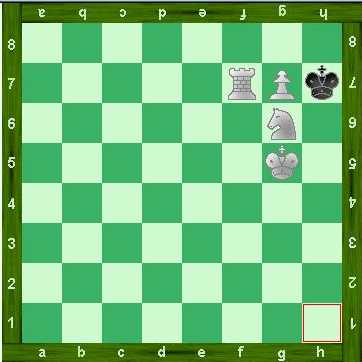

Les énigmes suivantes pourront vous sembler au premier abord impossibles à résoudre ...
Et pourtant, toutes ont une solution !
Le Cadi
Sur son lit de mort, le cheikh convoque ses deux fils. Il leur révèle un grand secret qu'il a gardé toute sa vie: "Là-bas,
derrière la grande dune, j'ai caché un trésor. Après ma mort, rendez-vous sur les lieux. Alors il appartiendra à celui de vous deux dont le chameau
sera arrivé en second".
Quelques jours plus tard, le cheikh meurt et les deux fils sont bien embêtés. Il voudrait tous les deux avoir le trésor, mais comment faire. Si l'un campe à proximité pour éviter que son chameau n'arrive en premier, son frère fera de même et ils vont finir par mourir de soif.
Les deux frères s'en remettent alors au cadi, qui leur murmure quelque chose à l'oreille. Aussitôt, on voit les deux fils et leurs deux chameaux s'élancer à toute allure vers la grande dune. Mais que leur a dit le cadi?
Il leur a simplement dit d'y aller en enfourchant le chameau de son frère! Ainsi, celui qui arrivera en premier empochera le trésor!
Les rasoirs
Il était une fois deux pays voisins très
amis... appelons-les la nordie et la sudie. Depuis belle lurette, leurs
deux gouvernements avaient décidé qu'un dollar du nord
vaudrait un dollar du sud. Mais un jour, à la suite d'une détérioration
de leurs relations, le gouvernement de la nordie décide qu'un
dollar du sud vaudra, dans le nord, 0,90 dollars du nord. Le gouvernement
du sud ne s'en laisse pas compter, et décide aussitôt qu'un
dollar du nord vaudra désormais 0.90 dollars du sud dans la sudie.
Un jeune homme avisé habitait à proximité
de la frontière entre ces deux pays. Un beau matin, il se rend
dans la nordie, achète un rasoir de 10 cents, et donne un dollar
du nord. Le commerçant doit lui rendre 0.9 dollars du nord, mais
n'a pas la monnaie et pour lui rembourser lui donne un dollar du sud,
ce qui en nordie est équivalent... Ensuite, ce jeune homme s'en
retourne en Sudie, et achète un paquet de lames à 10 cents.
Pour cela, il donne son dollar du sud, et le commerçant, qui
doit lui rendre 0.90 dollars du sud, lui rend en fait un dollar du nord,
ce qui bien sûr est équivalent en Sudie.
Alors analysons la situation.... Le jeune homme a toujours
son dollar du nord, plus son rasoir et ses lames, c'est tout bénéfice
pour lui.... Le premier commerçant a échangé un
dollar du sud contre un dollar du nord, et comme il habite en nordie,
il a gagné 0.10 dollars du nord, c'est tout bénéfice
pour lui... Le second commerçant a échangé un dollar
du nord contre un dollar du sud, et comme il habite en sudie, il a gagné
0,10 dollars du sud, le juste prix des lames, c'est tout bénéfice
pour lui! Mais alors, qui a payé
les rasoirs?
Ce sont les deux commerçants qui ont payé!!!
Et ils l'ont payé au moment de la dévaluation! Voici un
tableau qui explique pourquoi :
Le commerçant du nord a en magasin et
en caisse :
Commerçant du sud
Jeune homme
Avant la dévaluation :
1 dollar du sud, et un rasoir, soit dans la monnaie de son pays
: 1,1 dollars du nord
1 dollar du nord, et un paquet de lames de rasoir, soit dans la
monnaie de son pays : 1,1 dollars du sud
1 dollar du nord!
Après les dévaluations :
Son dollar du sud ne vaut plus que 0,90 dollars du nord. Il a
donc en tout 1 dollar du nord, qui est la monnaie de son pays
Son dollar du nord ne vaut plus que 0,90 dollars du sud, soit
au total dans la monnaie de son pays : 1 dollar du sud!
1 dollar du nord!
Après les achats :
Il n'a plus le rasoir, mais en caisse un dollar du nord :
Total : un dollar du nord!
Il n' a plus de lames de rasoir, mais en caisse un dollar du
sud :
Total : un dollar du sud!
1 dollar du nord, plus un rasoir et ses lames!
Analyse :
Perte sèche de 0.10 dollars du nord.
Perte sèche de 0.10 dollars du sud
Gain : un rasoir et ses lames.
Les fermières
Deux fermières viennent vendre leurs pommes au marché. La première vend 30 pommes, à raison de 2 pour 5 euros. La seconde vend 30 pommes à raison de 3 pour 5 euros. Elles vendent tous leurs fruits, la première empoche donc 75 euros, et la seconde 50, soit au total 125 euros. La semaine suivante, elles décident de s'allier à raison de 5 pour 10 euros. Elle ramène donc 120 euros. La seconde proteste : 120 euros, c'est 5 de moins que la semaine précédente. Mais où est passé l'argent?
Les deux fermières ont simplement été trop vite en besogne. Voyons comment vendre leurs pommes : une apporte 2 pommes à 5 euros, l'autre 3 pommes à 5 euros, pour faire un paquet de 5 pommes à 10 euros. Une fois 10 paquets à 10 euros faits, un des paquets est épuisé, et il reste dans le deuxième paquet 10 pommes vendues 2 pour 5 euros, soit les 10 pour 25 euros. Avec la solution choisie par les fermières, elles sont vendues 5 pour 10 euros, soit 10 pour 20 euros.
Mat en un coup
Dans le problème suivant, posé par Johannes Hermann Zukertort dans les années 1880, les blancs jouent et font mat en un coup!

Enigme posée par Boody sur le forum
La seule solution est : promouvoir le pion en g8 en un cavalier NOIR! Ce coup serait illégal maintenant
avec les règles établies par la FIDE, il aurait été autorisé dans les années 1880, quand les règles étaient moins établies.
Le partage des 17 chevaux
Un vieil homme, sentant la mort arrivée, convoque ces 3 fils. Il dit au premier : à ma mort, je te lègue la moitié de mes chevaux.
Il dit au second : à ma mort, je te lègue le tiers de mes chevaux. Il dit enfin au troisième : à ma mort, je te lègue le neuvième
de mes chevaux.
Quelques semaines plus tard, à l'annonce de son décès, les 3 frères se retrouvent. Ils sont bien embêtés car leur vieux père
possédait 17 chevaux. Arrive à dos de cheval le notaire. Il leur propose une solution qui convient à tout le monde. Quelle est cette solution?
Le notaire propose d'ajouter son cheval au 17 chevaux du grand père. Il y a donc 18 chevaux. Le premier enfant part avec 9 chevaux, le
second avec 6, et le dernier avec 2. Comme 2+6+9=17, il reste un cheval : le notaire repart donc avec son propre cheval qui n'a servi que pour faire
le partage.